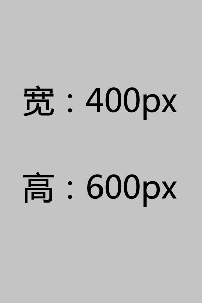

原图尺寸：

1、调用方式：
<img src="1_b.jpg" alt="自动缩放后的效果" onload="javascript:DrawImage(this,200,200);" />
2、调用方式：如果图片较大，建议在图片标签里面同时设置期望的图片大小，这样不会导致页面在加载中撑开，该大小不会影响最终缩放效果。 可以修改上面的代码为：
<img src="1_b.jpg" alt="自动缩放后的效果" width="200" height="200" onload="javascript:DrawImage(this,200,200);" />